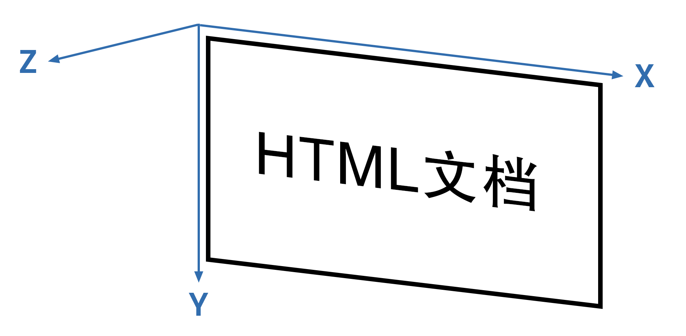

动画是 CSS 的核心功能之一，它使网页能够展现更多生动、丰富的内容。
CSS 动画是 Web 设计艺术的核心内容之一。不过我们设计页面时需要注意动画的适用范围：在展示性的网页和普通应用程序方面，动画可以提升用户的使用体验；而在生产力工具方面，则应当尽量克制地使用 CSS 动画，防止无关动画对工作效率造成影响。
下面是关于 CSS 动画的介绍，让我们开始吧。
一、transition 动画
在 CSS 中，许多属性都有可预测的变化（都有过程）。例如：
opacity:0 → opacity:1; /*属性内容由 0 逐渐变为 0.1、0.2、0.4 ··· 1.0*/
padding:10px → padding:50px; /*属性内容由 10px 逐渐变为 20px、30px ··· 50px*/在不定义动画的时候，这些属性的内容是突变的，因而元素的样式是瞬时变化的，表现得比较突兀。但是，如果我们利用这些属性的内容的变化过程，将内容的变化从突变变成逐渐变化，就能够使样式的变化变得平缓——这就是 CSS 动画。
实现 CSS 动画的最简单方法是 transition，它会根据属性内容的变化，自动计算出相应的 CSS 动画，在定义简单动画时非常简便。
（一）基础属性
transition 属性的语法如下：
transition:<动画属性1> <时间> <变化曲线> <延时>,<动画属性2> <时间> <变化曲线> <延时> ····;多个动画间以 “ , ” 分隔。例如：
.button {
background-color:white;
color:black;
transition:background-color .15s,color .15s;
&:hover {
background-color:blue;
color:white;
}
}我们暂时缺省第三、四个属性（变化曲线和延时）。在这里，我们为 button 加上了背景颜色和文本颜色的过渡，使背景色逐渐由白变蓝、文本色由黑变白，动画时间均为 0.15s。
注意不能写多个 transition，否则后面的会全部覆盖前面的。例如：
.text {
transition:color .15s,background-color .15s;
transition:padding .15s;
}最后只会剩下 padding 的 0.15s 动画。
transition 只对可插值属性生效，对 display、height: auto 无效。
（二）变化曲线和延时
变化曲线决定了属性的内容是如何变化的，默认是 ease（刚开始缓慢变化，中间加快，最后又变慢）。
1、几种预设曲线
可以使用关键字来调用一些预设曲线，例如：
—— linear（线性）：匀速变化，全程变化速度不变。
—— ease-in：慢进快出。
—— ease-out：快进慢出。
—— ease-in-out：两端慢、中间快。
.button {
transition:color .15s ease-in-out;
}总之，ease-* 系列关键字，决定了动画是否在开始/结束时 “缓入缓出”。
注意：ease-in-out 和 ease 均为淡入淡出，但 ease-in-out 是对称的（初/末速度均为0），更加平滑；ease 是非对称的（初速度不为0）。
2、贝塞尔曲线
如果使用关键字定义仍然不能满足动画需要，则可以使用 贝塞尔曲线 cubic-bezier 自定义动画曲线。
例如：
.button {
transition:background-color .15s cubic-bezier(0.29, 1.01, 1, -0.68);
}现在的前端 IDE 大部分都已经有很直观的贝塞尔曲线编辑器，无需背记相关规则。
3、延时（delay）
第四个属性是延时，它决定了动画在播放前的 “耽搁”。例如，延时被设置为 0.4s 时，当动画被触发时，浏览器会等待 0.4s 才执行实际的动画操作。
二、transform 变换
transform 规定了元素的几何变换（移动、旋转、缩放等），我们可以使用 transform 属性的变化，配合 CSS 动画语法使用，制作出几何方面的 CSS 动画。
（一）坐标系和变换原点
1、初始坐标系
在 transform 变换中，采取如下坐标系：
—— X 轴：平行于底部，从左指向右。
—— Y 轴：平行于左部，从上指向下。
—— Z 轴：垂直于屏幕面，由屏幕内指向屏幕外。

2、原点 —— transform-origin
可使用 transform-origin 属性来设置 transform 变化的原点。基本用法如下：
transform-origin: <X> <Y> <Z>三个坐标参数可以是像素，X、Y轴参数也可以是百分数、关键字（left、right、center），用于设置变换原点的位置。如果不是 3D 变化，可以缺省 <Z>。
例如：
transform-origin: center center; /* 默认，元素中心 */
transform-origin: left top; /* 左上角 */
transform-origin: 0 0; /* 左上角，坐标写法 */
transform-origin: 50% 100%; /* 底部中心 */
注意：transform-origin 的坐标系和上面说的坐标系是一样的，但是 top、bottom 等关键字是 “形态学位置”，因此 top 永远指代的是屏幕的上部，它指代的并不是 Y 最大、而是 Y 最小的地方。例如，下面的写法是等价的：
transform-origin: right top;
transform-origin: 100% 0%;（二）transform 基本用法
1、基础用法
transform 的用法如下：
transform: <act1> <act2> ·····;例如：
transform:rotateX(90deg) translateX(20px);注意，多个动作之间以空格而非逗号分隔。另外，transform 属性会互相覆盖，一个 CSS 块中不能写两个 transform。例如，上面的属性不能拆为下面的写法：
transform:rotateX(90deg);
transform:translateX(20px);下面的 transform 属性会覆盖上面的，导致最后只剩下下面的动作。
2、多动作关系
执行动作时，浏览器按从左到右的顺序执行。因此，下面两种写法是不同的：
transform:translateX(-50px) rotateZ(30deg);
transform:rotateZ(30deg) translateX(-50px);前者是先平移后旋转，后者是先旋转后平移。
为什么会这样呢？因为元素的动作是以自身的局部坐标系来执行的。元素的初始局部坐标系为初始坐标系，而变换会使元素的坐标系发生改变（例如，rotateZ(30deg) 后 X 轴也会以 Z 轴为轴顺时针旋转 30 度），导致 translateX 等的实际语义改变，产生意料之外的效果。
3、配合 transition
可配合 transition 实现 transform 的变换：
.button {
transition:transform .15s;
}
.button:hover {
transform:translateX(20px);
}button 被 hover 后会出现 X 轴方向 0.15s 的 20px 平滑滑动。
注意：transition 中属性写为 transform，不写具体动作。
4、其他参数
可用 backface-visibility 属性控制 3D 变换时是否显示元素的背面。
backface-visibility: hidden; /* 隐藏 */
backface-visibility: visible; /* 显示 */在做翻转卡片时，可通过 hidden 实现卡片的隐藏效果；普通 3D 则可使用 visible。默认为 visible。
（三）常见的 transform 变换
transform 变化对元素位置的改变有些类似 position:relative —— 元素的实际位置并未改变（未脱离原有文档流），但视觉位置发生了改变。
1、平移（translate）
将元素平移一定的距离。平移语法有四种：
translateX(<x>);
translateY(<y>);
translateZ(<z>);
translate(<x>,<y>);可使元素分别沿着 X、Y、Z 轴方向平移。
第四种语法是合并语法，可同时使元素沿着 X、Y 方向移动。其中 Y 的内容可以缺省（默认为 0）。
2、旋转（rotate）
使元素旋转一定的角度（正数为顺时针旋转）。旋转语法也有三种：
rotateX(<angle>);
rotateY(<angle>);
rotateZ(<angle>);
角度需要带上单位，例如 deg、rad、turn（圆周）、grad 等。
此外，还有综合写法 rotate3d：
rotate3d(<x>,<y>,<z>,<angle>);它的意思是：以空间向量（x,y,z）为旋转轴旋转一定角度。例如：
.card {
transform:rotate3d(1,1,0,30deg)
}意味着以空间向量 (1,1,0) 为旋转轴旋转 30 度。
此外还有一个最简写法 rotate(<angle>)，它等价于 rotateZ(<angle>)，更加简洁。
3、缩放（scale）
和上面基本一致，但 scale 接受的参数必须是百分类数（如 50%、0.5），不能写 50px 等。
scale 有一种合并语法，是：
scale(<sx>,<sy>);意味着分别沿着 X、Y 轴方向缩放。
三、animation 关键帧（keyframes）动画
transition 动画已经可以解决一些基本的动画问题，但它本质上是对 CSS 属性内容的 “初→末” 变化作插帧平滑处理。如果我们想要精确控制整个 CSS 样式变化的过程（例如，指定动画播放30%时rotateZ程度为50deg），而不仅仅是根据 CSS 初/末样式自动生成简单的过程动画，就需要引入 keyframes 关键帧动画。
（一）关键帧动画
1、声明方法
关键帧动画需要使用 @keyframes（注意是复数）规则声明。语法如下：
@keyframes <动画名> {
百分进度 {
}
······
}例如：
@keyframes iconUpDown {
0% {
transform:translateY(0px);
}
40% {
transform:translateY(-10px);
}
80% {
transform:translateY(5px);
}
100% {
transform:translateY(0px);
}
}可使用 from、to 关键字来表示 0%、100%，其作用完全相同。
注意：transition 和 animation 相同，均不支持离散属性的过渡（如 display:none）。另外，如果一个元素的 display 为 none，则其动画不会被播放，只有 display 不再为 none 时才会开始播放。
2、调用方法
可使用 animation 参数引入 keyframes 动画。animation 基本语法和 transition 很像，为：
.diva {
animation:<名字> <持续时间> <变化曲线> <延迟时间>,······;
}例如：
.icon {
animation:iconUpDown .15s ease-in-out .15s;
}这里的 ease-in-out（淡入淡出）关键字（或贝塞尔曲线）和 transition 语法一致，但效果有区别：它会作用于所有关键帧之间。例如：
@keyframes slide {
0% { transform: translateX(0); }
50% { transform: translateX(100px); }
100% { transform: translateX(0); }
}
.box {
animation: slide 1s ease-in-out;
}由于 50% 时速度为0，ease-in-out 又使动画在 50% 时缓入缓出，因此视觉上 50% 时看起来会像是暂时停住了。
（二）进阶参数
其实 animation 的完整语法如下：
animation:<名字> <持续时间> <变化曲线> <延迟时间> <次数> <方向> <填充模式> <状态>;后四个属性是可缺省的高级属性。由于它们的关键字、写法等都完全不同，因此可以任意缺省，浏览器能够识别我们写的是哪个属性。
1、次数 animation-iteration-count
决定了动画的播放次数，默认为 1。
次数可以是小数，例如 2.5（播放2.5次，第三次播放只播放一半）；也可以使用关键字 infinite（无限），使动画循环播放。
2、方向 animation-direction
决定了动画的播放方向（如 100% => 0%）。其几个取值为：
—— normal：默认值，0 => 100%。
—— reverse：反转，100% => 0%（倒过来播放动画）。
—— alternate：交替，奇数次播放为 normal，偶数次播放为 reverse。
—— alternate-reverse：反转交替，交替的播放行为反过来。
3、填充模式 animation-fill-mode
决定了动画开始前、结束后，元素是否仍然具有动画所规定的一些属性。几种取值如下：
—— none：默认值，不保留动画效果。动画结束后，元素将瞬间变回动画播放前的样式；当有 delay 播放时，delay 时间内元素保持动画播放前的样式。
—— forwards：向前。动画结束后，元素的样式将保持在最后一帧
—— backwards：向后。动画开始但仍然处于 delay 中时，将动画的第一帧作为元素的样式，直到动画开始。
—— both：同时具有 forwards、backwards 属性。
4、状态 animation-play-state
这一属性有两个内容，分别是 running、paused（运行中、停止）。若播放中的动画被赋予 animation-play-state:paused，则动画会暂停。这一属性可用于精细控制动画。
（三）综合示例
.leftbar {
position:fixed;
width:50px;
height:50px;
background-color:blue;
animation:anim 1s linear <delay缺省> infinite normal both;
}
.leftbar:hover {
animation-play-state:paused;
}
@keyframes anim {
to {
transform:rotate(360deg);
}
}